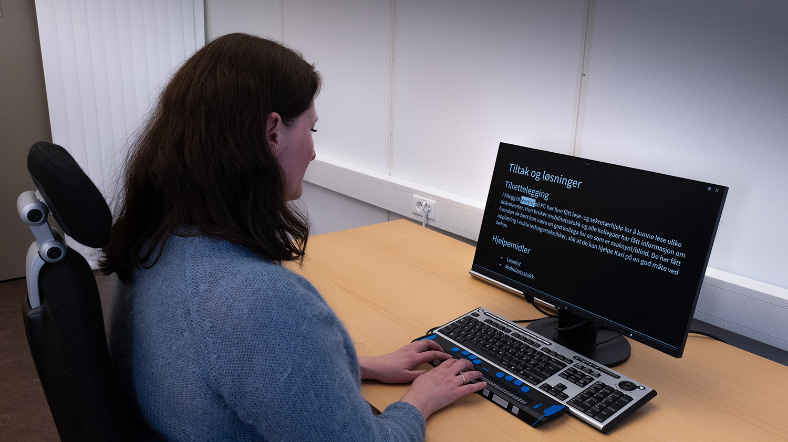

1. Hva menes med universell utforming, og hva står WCAG for?
Universell utforming handler enkelt og greit om å lage ting slik at alle kan bruke dem, uansett hvilke utfordringer de har. Når vi snakker om nettsider, betyr det at siden skal fungere like bra enten du ser dårlig, er blind, har nedsatt hørsel eller må navigere med bare tastaturet.
WCAG står for Web Content Accessibility Guidelines. Dette er internasjonale retningslinjer og standarder laget av W3C (Web Accessibility Initiative). De forklarer hvordan man lager nettsider som er tilgjengelige for alle.
